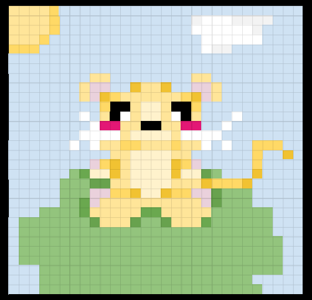

MENU

Web Development
Programming and Prototyping
School Year 2024-25
Nafisa Nawshin
ABOUT ME
My name is Nafisa Nawshin and I am a Junior student in Programming and Prototyping at Thomas Edison CTE High School.
With my growing interest in Python, I have made this Portfolio so I have everything that I need together, in one easy-to-navigate way!
I like spending my free time reading different stories as well as journaling about my day. As a student in 11th grade, I find focusing on my grades extremely important, especially with the 3 AP classes that I am registered in.
I hope to excel in all of my classes and study to the best of my abilities, acquiring new amazing skills along the way! My journey as a web developer was not a linear one, as I faced a lot of difficulties when trying to learn the complex language
of HTML, CSS, JavaScript, and Python. In the end, perseverance had helped me throughout the way and led me to become the amazing developer that I am today!
EMPOW
As a member of EmPow, I contributed to my teams project by doing a lot of the research that was involved within studying the job market, as well as making the protoype/mockup for the journey of getting a job. I helped
with making some of the slides, and took the responsibility of presenting slides 10-16. I had a fun time in EmPow and I don't regret all of the new and amazing things that I have learned along the way!